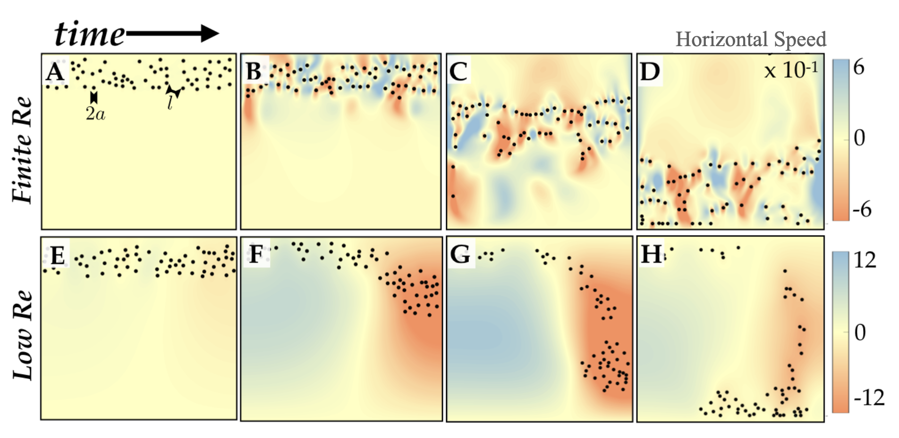
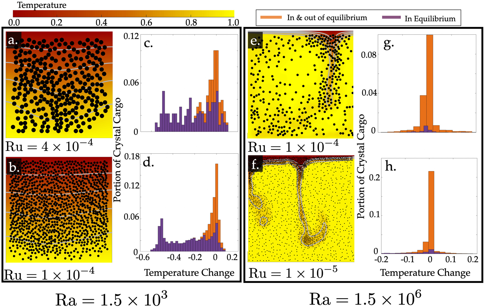

At the heart of volcanic eruptions lies the intricate interplay of crystals within magma, not only influencing the dynamic behavior but also preserving vital records of the underlying magmatic processes. In our research, we delve into this fascinating realm, aiming to identify and understand the dynamics driven by crystals and their implications on the crystalline records. To explore these phenomena, we employ advanced multiphase fluid dynamic and thermodynamic models, testing our ideas and theories. Through this multidisciplinary approach, we strive to unlock the secrets hidden within magma and decipher the complex mechanisms behind volcanic eruptions.
Recent Publications
-
 Crystal fractionation by crystal-driven convection (Geophysical Research Letters, 2020)
Magma exhibits diverse eruptive behaviors, ranging from explosive eruptions to effusive flows, while some magma remains locked beneath the surface, never erupting. One crucial factor contributing to these variations is the evolutionary change that magma undergoes in the Earth's crust, known as fractional crystallization. In this research, we describe how the mechanical aspect of this process can be very efficient under crystal driven convection. We provide a potential explanation for the global compositional distribution of erupted magma and magma that stayed locked beneath the surface.
 Biased Witnesses: Crystal Thermal Records May Give Conflicting Accounts of Magma Cooling (Journal of Geophysical Research, 2022)
One of the best observational tools in volcanology is the testimony provided by crystals that grow in magma. Similar to tree rings, the zonations in a sliced crystal give a crystal's history. Unlike trees, which are stationary in space and whose rings can only grow each year, crystals can grow and shrink as they dynamically travel through magma. Recently, research based on zonations have suggested answers to fundamental questions like what triggers eruptions? In order to understand if these crystals are only recording large scale processes that can trigger eruptions, we looked at the opposite: very small scale processes. We built a simulator that couples both (1) a simulator that captures the interactions between crystals and melt and (2) a model that describes the thermal state of the system. By including both, we could model a magmatic system as recorded by crystals. Then we simulated a ubiquitous process: magma cooling in a reservoir. It revealed that small crystals collectively can create a flow field and alter the thermal state. By doing so, their zonations record this altered thermal state. Hence, this research reveals that when crystals are actually capturing very small magma dynamics they can be deceptive in suggesting volcano scale processes.